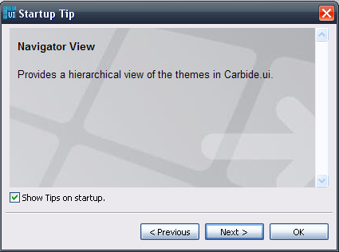
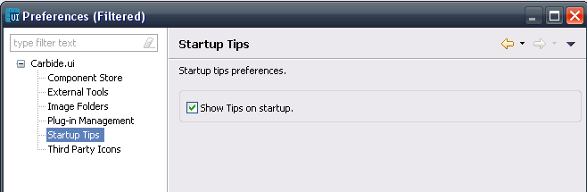

Startup Tip
Startup Tip as the name suggests opens up, when the tool starts up and provides the user with the useful tips about the tool as shown below,

Figure: Startup Tip
User can navigate back and forth using the Previous and Next buttons to see the Tips. By default the Startup tip is shown when starting the Tool and user can switch off this window by unchecking the checkbox option which says "Show tip on startup" at the bottom of the window.
The same settings can also be done using the preference window as shown in the figure,

Figure: Startup Tip Preference setting